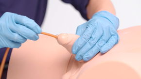

About Catherization

Insertion of a Urinary Catheter:
- Clean the Area: Using an antiseptic solution, cleanse the genital area of the patient to reduce the risk of infection.
- Lubricate the Catheter: Apply sterile lubricant to the catheter to facilitate smooth insertion.
- Insert the Catheter: Gently insert the catheter into the urethra, advancing it until urine begins to flow. If resistance is encountered, do not force the catheter.
- Inflate the Balloon (if applicable): For indwelling catheters, once urine starts to flow, inflate the balloon with sterile water to secure the catheter in place.
Post-Insertion Care:
- Secure the Catheter: Use a catheter strap or leg bag to secure the catheter and prevent accidental dislodgement.
- Monitor for Complications: Observe the patient for any signs of discomfort, infection, or obstruction.
Removal of a Urinary Catheter:
Procedure:
- Deflate the Balloon: Using a syringe, aspirate the sterile water from the balloon to deflate it. Ensure all fluid is removed.
- Withdraw the Catheter: Gently pull the catheter out, ensuring a smooth and controlled removal.
Post-Removal Care:
- Dispose of Equipment: Properly dispose of the catheter and other supplies in accordance with hospital protocol.
- Observe for Complications: Monitor the patient for signs of discomfort, urinary retention, or infection after removal.